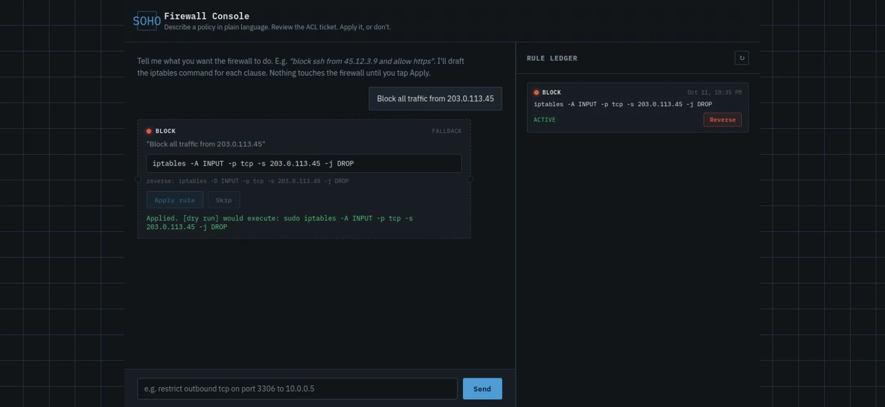

- M4
Natural Language Firewall
Plain-English rule generation and management API
Dulanjana E.J.A.T. · IT22186874 · Member
M4 lets a non-expert administrator manage the firewall in plain English. A DistilBERT intent classifier and a Flan-T5 generator fine-tuned with LoRA turn commands into iptables rules and /etc/hosts sinkhole entries, with a regex fallback, guardrails, an SQLite audit trail and a token-protected API that fails closed.
Research question
Most firewalls are configured by hand with tools such as iptables, which is difficult for SOHO users without networking experience; a wrong address, port or rule order can open a weakness or block legitimate traffic. M4 lets administrators manage the firewall in plain English, and gives other components a safe, validated and reversible way to request blocks.
- How accurately can DistilBERT identify firewall intentions (allow, block, restrict) from natural-language instructions?
- How effectively can Flan-T5 with PEFT adapters convert natural-language requests into syntactically valid and semantically appropriate iptables commands?
- To what extent do rule validation and the regex fallback reduce invalid or unsafe commands compared with ML generation alone?
- Can the component safely apply, record and reverse iptables rules and domain blocks while keeping unsafe commands away from the execution layer?
- How reliably can M4 process authorised block and unblock requests from the CTI component while rejecting unauthorised or unsafe ones?
What it does
-
01
Intent classification
DistilBERT classifies each command as allow, block or restrict.
-
02
Rule generation
Flan-T5 fine-tuned with LoRA (0.45% of parameters trainable) generates the rule, with a regex fallback.
-
03
Guardrails and enforcement
Rules are validated before iptables rules and /etc/hosts sinkhole entries are written.
-
04
Audit trail and reversal
Every block and unblock is logged in SQLite and can be reversed in one step.
-
05
External API
Token-protected /api/external/block, /unblock and /status endpoints that fail closed.
Pipeline
-
01
Receive
A plain-English command, or a block/unblock request from M1 through the token-protected API.
-
02
Interpret
DistilBERT classifies the intent; Flan-T5 (LoRA) generates the rule, with a regex fallback.
-
03
Enforce
Guardrails validate the rule before iptables rules and /etc/hosts sinkhole entries are written.
-
04
Audit
The block or unblock is logged in SQLite and can be reversed in one step.

